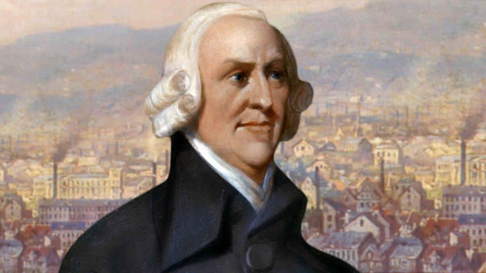

(Kirkcaldy, 5 de junio de 1723 - Edimburgo, 17 de julio de 1790)

Imagen tomada de: https://www.biografiacortade.comadam-smith
Adam Smith es uno de los economistas más famosos de la historia.
Se considera el padre de la economía moderna.
En sus teorías económicas combina historia, filosofía, desarrollo económico, psicología y ética.
Nació en Kirkcaldy (Escocia) el 5 de junio de 1723 y fue el único hijo del segundo matrimonio de Adam Smith,
oficial de aduanas, y Margaret Douglas.
Poseía una prodigiosa memoria y vocación por el estudio, facultades que le facilitaron el ingreso en la Universidad de Glasgow.
Destacan sus estudios sobre crecimiento económico, libre competencia, liberalismo y economía política.
Una vez graduado, obtuvo una beca para el Balliol College de Oxford,
donde concluyó brillantemente sus estudios, a los 23 años de edad,
con un perfecto dominio de la filosofía clásica y sus máximos representantes:
Platón, Aristóteles y Sócrates.
Destacó como docente excepcional en la Universidad de Glasgow y en 1758
fue nombrado decano de la facultad. Afirman que Voltaire, escritor francés
y exponente de la Ilustración, le enviaba sus mejores alumnos como muestra
de su reconocimiento y admiración.
En 1767, comenzó a escribir su “Ensayo sobre la riqueza de las naciones”
que fue finalmente publicado en Londres seis años más tarde.
Esta obra representó el primer gran trabajo de economía política clásica y
liberal donde se aplicaban a la economía, por vez primera, los principios
de investigación científica, en un intento por construir una ciencia independiente.
Constituye el primer libro moderno de economía, por el cual se le considera
el padre de la economía moderna.
Defendió la idea de que lo mejor para una sociedad es que cada individuo
busque su propio beneficio pero va mucho más allá de esas ideas,
reconociendo que los seres humanos no se guían solo por el propio interés,
sino que la humanidad, la justicia, la generosidad y la solidaridad son
cualidades imprescindibles para el bienestar de una sociedad.
Video tomado de: https://www.youtube.com/watch?v=we44We9XcN4&ab_channel=QuemandoNeuronas
Mi primera página web. Para mí: Un universo nuevo y maravilloso